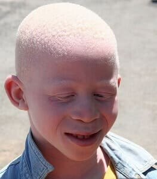

Enanismo hipofisiario. producido por una mutación de la hormona del crecimiento.
Anemia falciforme. Mutación de la hemoglobina que le hace perder capacidad de transportar oxígeno.
Albinismo. No pueden sintetizar melanina porque una mutación impide que una enzima la sintetice.
